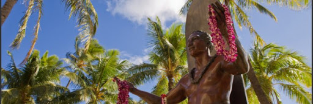
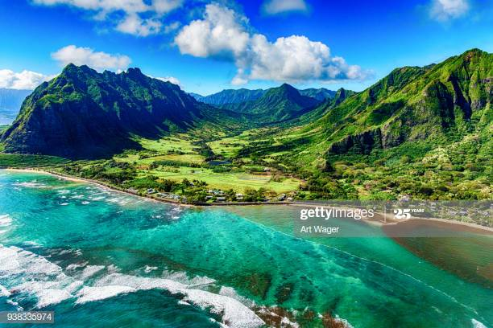

|  |  |
Hawaii is a state of the United States of America located in the Pacific Ocean. It is the only U.S. state located outside North America and the only island state. The state encompasses nearly the entire Hawaiian archipelago, 137 islands spread over 1,500 miles. It's capital is Hondulu
Hawaii is a beautiful and popular tourist destination. Hawaii is a world-renowned vacation spot, known for its beautiful islands lined with beaches of warm, white sand and verdant, lush flora
The best months to visit Hawaii are April (the first 3 weeks), May, September, and October for great weather, fewer crowds, and fair rates. Oahu's temperatures range from 26°C to 31°C all year long, with hot summers (June through October) and pleasant winters (mid-December through late March)
When it's raining on one side of an island in Hawaii, though, the sun is usually shining on another, a short drive away. However, if the priority is to avoid heavy downpours in traditionally fun-in-the-sun locations such as Waikiki, Poipu, Kona and Kihei, the worst time to go is November through April.
Click here to know some places to visit in hawaii